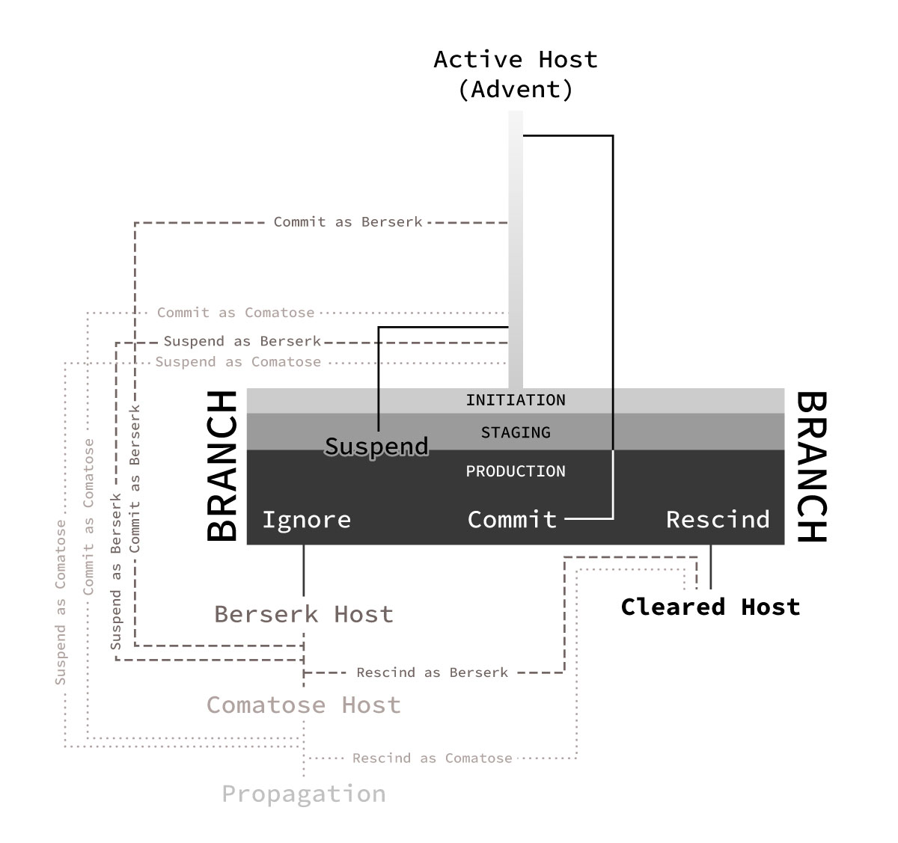

What to Expect in a Branch
Branches are fundamentally a Vice’s attempt at distracting a Host while it focuses on expanding its Track Network. Branch properties vary widely between Hosts, and many describe them as a hallucination, dream or deja-vu episode. These "episodes" are not tangible in that bystanders cannot observe the current happenings of a Branch, and the actions performed during an active Branch do not reflect reality. For example, if a Host is slashed with the claws of their Vice's Exhibition, they will not leave the Branch with actual wounds. However, major injuries obtained during the Branch, such as broken bones or punctured organs, can present afterward as stiff muscles or soreness and can last anywhere from a few hours to a couple days.
Vices often use people, phrases, smells, and anything that could possibly resemble the properties of their Advent to incite Branches. Most Branches take place when a Host is in the Active phase, and if they go unaddressed, can push a Host into the Berserk phase. Many Vices also use Branches as a defense mechanism, often inciting them as a reaction to a perceived threat, such as coming too close to the Vice Core. Some intelligent Vices will incite a Branch as a means to throw off a conversation or train of thought if a Host intends to pursue Rescission.
Branches are most commonly incited by the Vice, though under treatment of a Vice Management Specialist, some Branches can be purposefully initiated with the intent to Rescind with the help of experienced Adjuncts. Whether the Branch is initiated via the Vice or the Host has no bearing on its properties, though some do claim Vices have shown more aggression and unpredictability when faced with a Branch incited by the Host.
"Rogue" Branches refers to Branches incited by the Vice that a Host is not prepared for or expecting. After multiple Branches, most Hosts are able to distinguish patterns, both in Branch formula and what particularly leads to Branch initiation. Rogue Branches occur when Vices deviate from these expectations, often observed in Vice classifications with a medium or higher threat level.
Branch Phases
What to ExpectBranches have multiple phases, each having unique properties that can serve the Host and Adjuncts valuable information. In total, a Branch in its entirety—Suspension, Commits or Rescission included—can last anywhere from 3 to 10 minutes.
Every Branch, regardless of Vice classification, follows the stages below, though some recognizable characteristics of each stage can change between classifications or not be present at all. The characteristics mentioned below are most commonly observed in Alpha and Beta Vices.
Initiation
The inciting incident of a Branch, this phase typically lasts between 5 to 30 seconds. Vices with Sudden Advents typically have quicker Initiation periods, while those of Vices with Gradual Advents tend to be longer and more complex. Knowing the properties present in a Branch Initiation can help Hosts prepare for or even avoid future Branches. These properties typically stem from the five senses and can arise from one or a combination of the five.
Most Vices have thin Tracks connected to a Host's cerebrum to monitor their interaction with these potential triggers and can create surges in perception, causing Hosts to become extremely susceptible to these triggers.
Branch Initiation cannot be felt or experienced by onlookers, though many do report Hosts having a glazed-over expression, slow or lethargic movement (if any), and dilated pupils.
After a handful of experiences, many Hosts are able to recognize a Branch Initiation, typically felt as a fluttering heartbeat, a sudden or inexplicable headache, and the sensation of being watched. Other side effects, such as goosebumbs, twitching muscles and lockjaw, have been reported. Not all Hosts are able to feel Branch Initiations, often in the case of Vices with higher threat levels.
Staging
During Staging, the environment for a Branch is quite literally being staged and fabricated. This phase typically lasts anywhere from 1-3 minutes, depending on the intended complexity of the Branch and how many properties were affected during Initiation.
During this phase, Adjuncts are able to be pulled in, whether intentionally by the Host or as a wildcard by the Vice. A potential Adjunct must make and maintain physical contact with the Host in order to be properly brought in. If physical contact is lost during this phase, the Adjunct will be ejected, but can easily be brought back in as long as the Branch is still in Staging. Learn more in Queuing.
Some particularly intelligent Vices will briefly send bursts of energy not unlike hypnic jerks to potentially break contact, though this is quite the draining endeavor and is often only performed by desperate or mature Vices.
Tertiary Adjuncts brought in as wildcards by the Vice are obtained through extending its Track Network to reach any stationery people nearby. These Tracks are often extremely concentrated and occur at the expense of the Vice losing a potential Germination route. This behavior is often observed in mature Vices wtih an established Track Network that are aiming for Propagation. This connection can be easily lost, however, if the Tertiary Adjunct is able to break free from the trance, which is considerably simpler due to the lack of physical contact.
A Patch can be summoned to aid in Suspending a Branch at any time during Staging and at the start of Production. Outside of a Branch Arena, a Patch is more abstract in its form, with fuzzy edges, inaccurate colors and textures, and warping shapes. This is due to the Patch's composition of negative ions. Suspending a Branch is not recommended for reasons further explored below.
Staging is known for its trademark "magnetic pull", typically felt in the soles of bystanders' feet, all the way up to their knees. Many report an almost nauseating sensation akin to those of vestibular disorders, such as Mal de Débarquement syndrome. This pull is present regardless of a Vice's intention to draw in Tertiary Adjuncts and is a result of the change in ion concetration in the area. The magnetic pull is typically felt by those within a 12-foot radius, give or take a few feet.
Queuing
The process of Staging is not unlike a queue, where making contact with the Host is similar to reserving your space in line. The sooner an Adjunct makes and maintains contact with the Host, the sooner it will be brought in at the start of Production. If contact is lost, the Adjunct is sent to the back of the queue and will likely take more in-Branch time to be brought in.
Chaining
If a particularly unpredictable Branch has been initiated and all Adjuncts do not have time to make contact with the Host, making contact with each other will suffice, so long as at least one Adjunct is in contact with the Host. Doing so creates a staggered effect of bringing in Adjuncts, where Adjuncts that are two or three times removed from the Host can take up to an hour of in-Branch time to be brought in.
Production
The primary phase of Branches and what most associate with the term "Branch". Branches are intended to be Committed or Rescinded during this phase (with Suspension as a last resort in the very beginning) and can become deadly if left unaddressed. Chosing to ignore a Branch can lead to a Berserk or Comatose Host, which often makes Committing or Rescinding the Branch more difficult. This phase does not last for a determined amount of time, but it has been observed that if ignored, a Vice can achieve Propagation in less than 10 minutes, sometimes as quickly as five.
It is difficult to give a comprehensive overview of what happens during this phase, as Branches vary between Hosts. Some Vices have even changed Branch formulae as a means of survival, though doing so is often an exhausting and risky process. That being said, all Branches have the same goal in distracting a Host so the Vice Core can continue Germination.
Externally, a Branch is not visible and those involved do not seem different than usual, aside from the symptoms of Initiation and Staging outlined above. Hosts and Adjuncts typically refrain from movement and are often observed in a tightly-knit huddle or with supportive hands on the Host's stable body parts like the knee or shoulder.
Hosts and Adjuncts alike have described Branches as almost dreamlike in quality, similar to a hallucination, with parts often blurring between fiction and reality. When a Host is in Branch Production, they often have a disconnect from their body and do not react to outside stimuli. Words and touch often do not reach the Host when they are in this state. Many onlookers describe Hosts as being in a trance during this phase. In some instances, Hosts have even mistaken Branch experiences for real-life events due to the grey area of Branches. Details typically fade or alter quickly, so any newly obtained information should be documented shortly after the Branch is Suspended or Committed.
During this phase, the perceived reality of a Branch can last anywhere from half an hour to multiple hours and often follows "dream logic" in regards to physics, injuries and time passage. In the real world, a Host's body is being flooded with various hormones such as adrenaline or serotonin, their blood pressure is spiking, and white blood cells are released en masse; the Host's body is in attack mode and quickly throwing everything it can at the advancing Vice Core while the Host's consciousness is trapped in this dreamlike state.
It is extremely difficult for a Host to break from the trance of an initiated Branch and near impossible to back out of a Branch that is already in Production. The only known options when caught in a Branch are explored below in Branch Options. Adjuncts are only able to join during Staging and cannot join during Production unless using a Push Manager.
Branch Arena
The Branch Arena—sometimes alternately referred to as Branch reality—is where the majority of the action takes place once a Branch has finished Staging and moved into Production. This arena is often constructed using a Host's memories and emotions—and in more extreme cases, the memories of experienced Adjuncts. It is finite in its boundaries, meaning the edge can be reached; though, doing so poses no value to the Host as these edges are impenetrable and attempting to break through them has been proven to be a waste of time. The five senses are able to be activated within this arena, and many are able to recall sounds, smells, and even tastes after a Branch has passed.
The Vice's Exhibition is only visible within the Branch Arena. The Exhibition serves to intimidate the Host and rev up their fight or flight response so their body releases more hormones for the Vice to feed. Exhibitions are not considered to be a physical extension of the Vice Core, but rather a mirage that houses the Core. In the Branch Arena, these Exhibitions can be the size of wild animals, such as boars or wildcats, but can also tower as much as 5 times taller than the average human in the event of mature or intelligent Vices.
Within the Branch Arena, Patches can be summoned and used to threaten the Vice Core in the instances of Committing and Rescinding Branches. The form that Patches take in Production are more concrete and stable than the Patches summoned during Staging. Learn more about the use of Patches below in Branch Options.
In the Branch Arena, the following assets are capable of making an impact on the status of the Branch:
- Host
- Adjunct(s)
- Patch(es)
- Core
- Exhibition
The diagram below outlines the workings of a Branch Arena, with the center of the arena always being the Vice Core.
Branch Options
A Host is presented with three options when experiencing a Branch:
- Suspend: threaten Vice Core or render Host unstable/unconscious during Staging or early Branch
- Commit: threaten Vice Core or cause enough damage to Exhibition during Branch
- Rescind: separate or destory Core during Branch
Suspend
Suspending a Branch is only possible during Staging and very early Production, when the Branch is still in progress. Suspension ultimately occurs when the Vice Core is threatened via Patches from the Host or potential Adjuncts, though they have not been pulled into a Branch at this time and are not considered "true" Adjuncts. If a Host loses consciousness or their body is put into a critical state, the Vice will terminate the Branch and halt any progress made in Expansion.
Commit
If a Vice favors energy over growth, any progress made will be retracted. Most Vices sacrifice in both areas so as to obtain some growth and take a smaller hit energy-wise. Regardless, C As depicted in the diagram above, Committing is preferred over Suspending a Branch, as Suspension typically raises the likelihood of future Branches. Because Suspension happens during Staging or ProductionThis typically happens prior to or in the early stages of a Branch, when the Vice has barely emerged from its Core, and often leaves the Host and Adjuncts without any new information, doing no more than agitating the Vice. Branches should only be Suspended in dire circumstances, such as Adjuncts being inaccessible or the Host being unprepared. Committing a Branch generally has more positive associations, as Hosts and Adjuncts typically leave with a better understanding of the Vice, potentially having witnessed its Exhibition and behaviors and having depleted much of the Vice’s energy reserve. Most Hosts and Adjuncts default to Committing Vices, as is encouraged by most professionals, unless prepared for a Rescission. Committing Branches typically lessens the probability of new Branches in the near future.
Committing and Suspending Branches are achieved by rendering the Host as an “inhospitable environment”, this status being determined by the Vice. If the Branch has been initiated, more extreme measures can be taken so as to assure a properly addressed Branch. Hosts will likely not feel any physical repercussions after an aggressively addressed Branch outside of stiff muscles or mild headaches, though some experts believe that the body does indeed remember. Suspending Branches typically poses a higher risk of the Host sustaining physical injuries.
Branch Properties
In the early stages of researching Vices, it was debated whether or not a Branch was a tangible, physical incident or an elaborate mind game played on the Host. Now, we understand that a Branch is somewhere in between, and something that can even affect Adjuncts. Branches are “real” in the way that dreams and thoughts are real. Physically tangible, no, but Branches are still dangerous and can have physical, mental, and emotional effects on a Host and their Adjuncts. What happens in a Branch is not a direct one-to-one correlation to the outside world, as many injuries sustained in the process of Committing or Suspending Branches typically do not carry over, or at least not to the same degree of severity. More severe injuries sustained during an Committed Branch have been seen to manifest as stiff joints or muscle aches, and typically last anywhere from a day to a handful of weeks. Injuries sustained during a Suspended Branch have a higher likelihood of carrying over without the lessened severity. If you are still experiencing pain or discomfort from a Branch after a month, Acute Suppressants might be able to help.
Branches do not occur on the same time scale that we experience, and Branches that feel like they last for hours can be a mere handful of seconds in the real world. The most notable indication of an impending Branch is the feeling of being pulled toward the Host, and can last anywhere from a split second to a couple minutes. If a person is in contact with the Host while this sensation occurs, they will be pulled in as an Adjunct. After the pulling sensation subsides, the window for being pulled in has closed, though experienced Adjuncts can work their way in with practice, often at the expense of time passing drastically in the Branch.
More mature Vices are capable of expelling Adjuncts from Branches, though it is an extremely risky move, as doing so significantly drains the Vice of energy. Vices only expel Adjuncts they see as a severe risk. Adjuncts are technically capable of re-entering Branches after this has occurred, though it is extremely rare and incredibly difficult.
Branches are influenced largely in part by the characteristics and properties of a Vice’s Advent. In an attempt to disorient or emotionally paralyze Hosts, Vices often fabricate scenes, smells, and sounds strikingly similar to emotionally-charged life events, including but not limited to the Vice’s Advent. Branches can range from simple scenes to complex environments, their complexity often influenced by a Vice’s maturity. These environments have often been described as similar to dreams, their structures and layouts making sense during the Branch, but being incomprehensible afterward. Vices often interweave bits and pieces from different real-life happenings, maximizing emotional impact during the Branch and leading to feelings of confusion and exhaustion afterward. While the base formula for a Branch stays the same throughout a Vice’s life cycle, the more a Vice matures, the more it is capable of building on that base formula and introducing new scenes and properties. Noting the nature of these changes and additions can help prepare for future Rescission.